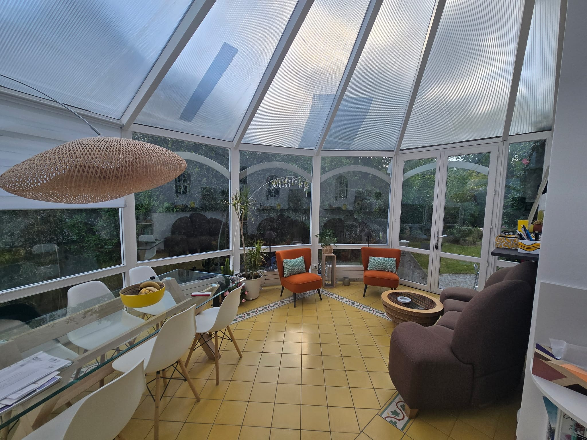
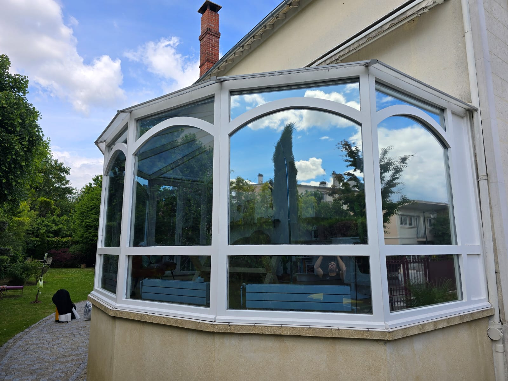
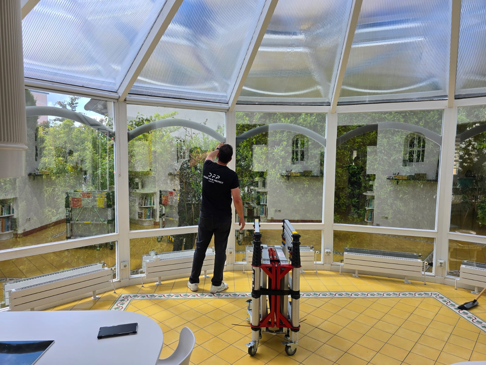
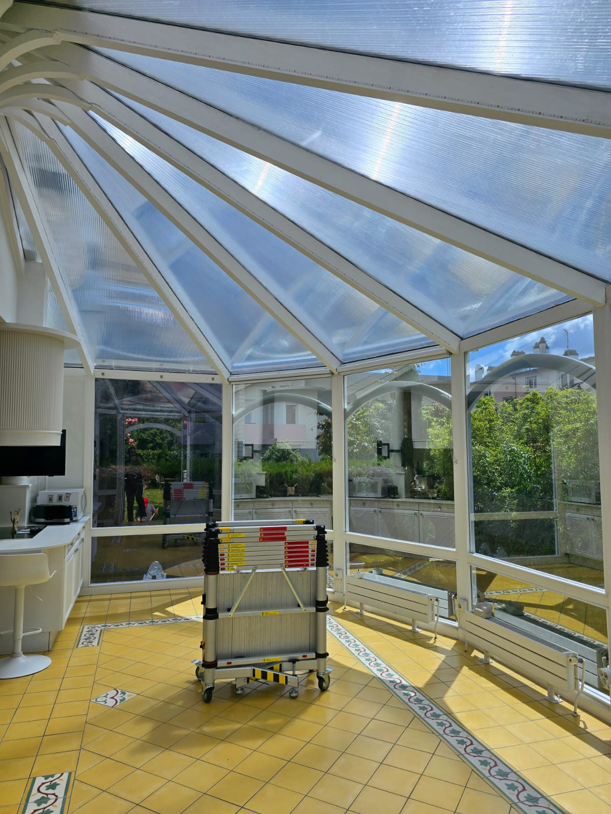

Film solaire sur véranda — fini la surchauffe sous la verrière.
Véranda d'agrément exposée plein ciel : agréable à la mi-saison, invivable dès les premiers beaux jours. Pose d'un film solaire anti-chaleur sur l'ensemble des fenêtres et de la toiture vitrée, depuis l'intérieur, sans toucher au bâti. Effet miroir, fin de la surchauffe, lumière préservée — résultat dès la première journée de soleil.
Le résultat en un coup d'œil
Avant / après — vu de l'extérieur.

Avant — vitrage nu, transparent, sans protection solaire Après — film solaire posé, le vitrage renvoie le rayonnement
Après — film solaire posé, le vitrage renvoie le rayonnement

Vue d'ensemble — le film renvoie chaleur et UV vers l'extérieur
Pose en cours — technicien DFP France, intervention par l'intérieur
Toiture traitée — le rayonnement est filtré, la lumière reste Après pose — un salon de nouveau utilisable même en plein soleil
Après pose — un salon de nouveau utilisable même en plein soleil
Le contexte
Une véranda d'agrément accolée à la maison, entièrement vitrée murs et toiture. Le genre d'espace dont on rêve l'hiver… et qu'on déserte l'été. Dès le milieu de matinée, l'effet de serre transforme la pièce en fournaise : température difficilement supportable, mobilier et sols qui se décolorent, espace de vie inutilisable une grande partie de la journée.
La demande du client : retrouver le confort sans renoncer à la lumière, sans store extérieur encombrant ni remplacement de vitrage, et sans gros travaux.
La solution technique
Pose d'un film solaire anti-chaleur sur l'ensemble des surfaces vitrées — fenêtres et toiture comprises — appliqué par l'intérieur. Ce que le film apporte :
- Rejet de chaleur élevé : la surchauffe est nettement réduite dès les premiers rayons
- Protection anti-UV : préserve sols, mobilier et textiles de la décoloration
- Lumière conservée : la véranda reste claire, jamais sombre
- Effet miroir & anti-regard : intimité en journée et confort visuel, sans éblouissement
L'intervention
Chantier réalisé en une journée, par l'intérieur — aucun échafaudage ni nacelle, aucune intervention en toiture extérieure. Nettoyage minutieux de chaque vitrage, découpe sur mesure panneau par panneau, application à l'eau savonneuse puis lissage à la raclette pour chasser l'eau et les bulles. La toiture, souvent la surface la plus exposée, est traitée comme les vitrages verticaux.
Aucune poussière, aucun bruit, aucune modification du bâti : la véranda est immédiatement réutilisable en fin de journée.
Ce que ce chantier illustre
Les vérandas, jardins d'hiver et extensions vitrées sont les pièces les plus sujettes à la surchauffe d'une maison : grande surface de verre, toiture exposée, aucun ombrage. Le film solaire anti-chaleur posé sur les fenêtres et la toiture, par l'intérieur, reste la solution la plus rapide et la moins invasive — une journée de chantier, zéro travaux, et un confort retrouvé dès le premier rayon de soleil. La même solution s'applique à toutes les fenêtres en surchauffe d'une maison ou d'un bureau en Île-de-France.
Véranda, jardin d'hiver, extension vitrée ?
Une journée. Et c'est de nouveau vivable.
Vérandas, verrières, baies plein sud — nous traitons toutes les surfaces vitrées en surchauffe en Île-de-France. Diagnostic gratuit, devis sous 48 h.